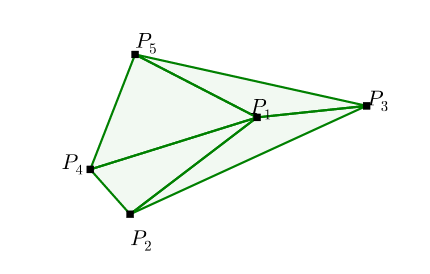
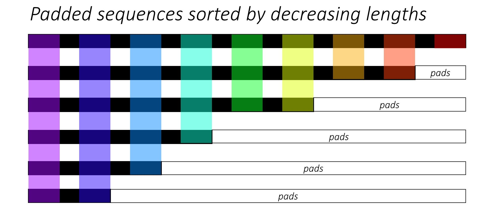

This is third episode of series: TSP From DP to Deep Learning. In this episode, we will be entering the realm of deep learning, specifically, a type of sequence-to-sequence called Pointer Networks is introduced. It is tailored to solve problems like TSP or Convex Hull. Full list of this series is listed below.
Episode 1: AC TSP on AIZU with recursive DP
Episode 2: TSP DP on a Euclidean Dataset
Episode 3: Pointer Networks in PyTorch
Episode 4: Search for Most Likely Sequence
Pointer Networks
In traditional sequence-to-sequence RNN, output classes depend on pre-defined size. For instance, a word generating RNN will utter one word from vocabulary of $|V|$ size at each time step. However, there is large set of problems such as Convex Hull, Delaunay Triangulation and TSP, where range of the each output is not pre-defined, but of variable size, defined by the input. *Pointer Networks * overcame the constraint by selecting $i$ -th input with probability derived from attention score.
Convex Hull
In following example, 10 points are given, the output is a sequence of points that bounds the set of all points. Each value in the output sequence is a integer ranging from 1 to 10, in this case, which is the value given by the concrete example. Generally, finding exact solution has been proven to be equivelent to sort problem, and has time complexity $O(n*log(n))$.

TSP
TSP is almost identical to Convex Hull problem, though output sequence is of fixed length. In previous epsiode, we reduced from $O(n!)$ to $O(n^2*2^n)$.

Delaunay Triangulation
A Delaunay triangulation for a set of points in a plane is a triangulation such that each circumcircle of every triangle is empty, meaning no point from $\mathcal{P}$ in its interior. This kind of problem outputs a sequence of sets, and each item in the set ranges from the input set $\mathcal{P}$.

Sequence-to-Sequence Model
Suppose now n is fixed. given a training pair, $(\mathcal{P}, C^{\mathcal{P}})$, the vanilla sequence-to-sequence model parameterized by $\theta$ computes the conditional probability.
$$
\begin{equation}
p\left(\mathcal{C}^{\mathcal{P}} | \mathcal{P} ; \theta\right)=\prod_{i=1}^{m(\mathcal{P})} p\left(C_{i} | C_{1}, \ldots, C_{i-1}, \mathcal{P} ; \theta\right)
\end{equation}
$$
The parameters of the model are learnt by maximizing the conditional probabilities for the training set, i.e.
$$
\begin{equation}
\theta^{*}=\underset{\theta}{\arg \max } \sum_{\mathcal{P}, \mathcal{C}^{\mathcal{P}}} \log p\left(\mathcal{C}^{\mathcal{P}} | \mathcal{P} ; \theta\right)
\end{equation}
$$
Content Based Input Attention
When attention is applied to vanilla sequence-to-sequence model, better result is obtained.
Let encoder and decoder states be $ (e_{1}, \ldots, e_{n}) $ and $ (d_{1}, \ldots, d_{m(\mathcal{P})}) $, respectively. At each output time $i$, compute the attention vector $d_i$ to be linear combination of $ (e_{1}, \ldots, e_{n}) $ with weights $ (a_{1}^{i}, \ldots, a_{n}^{i}) $
$$
d_{i} = \sum_{j=1}^{n} a_{j}^{i} e_{j}
$$
$ (a_{1}^{i}, \ldots, a_{n}^{i}) $ is softmax value of $ (u_{1}^{i}, \ldots, u_{n}^{i}) $ and $u_{j}^{i}$ can be considered as distance between $d_{i}$ and $e_{j}$. Notice that $v$, $W_1$, and $W_2$ are learnable parameters of the model.
Pointer Networks

Pointer Networks does not blend the encoder state $e_j$ to propagate extra information to the decoder, but instead, use $u^i_j$ as pointers to the input element.
More on Attention
In *FloydHub Blog - Attention Mechanism *, a clear and detailed explanation of difference and similarity between the classic first type of Attention, commonly referred to as Additive Attention by *Dzmitry Bahdanau * and second classic type, known as Multiplicative Attention and proposed by *Thang Luong *, is discussed.
It’s well known that in Luong Attention, three ways of alignment scoring function is defined, or the distance between $d_{i}$ and $e_{j}$.
PyTorch Implementation
In episode 2, we have introduced TSP dataset where each case is a line, of following form.
1 | x0, y0, x1, y1, ... output 1 v1 v2 v3 ... 1 |
PyTorch Dataset
Each case is converted to (input, input_len, output_in, output_out, output_len) of type nd.ndarray with appropriate padding and encapsulated in a extended PyTorch Dataset.
1 | from torch.utils.data import Dataset |

PyTorch pad_packed_sequence
Code in PyTorch seq-to-seq model typically utilizes pack_padded_sequence and pad_packed_sequence API to reduce computational cost. A detailed explanation is given here https://github.com/sgrvinod/a-PyTorch-Tutorial-to-Image-Captioning#decoder-1.

1 | class RNNEncoder(nn.Module): |
Attention Code
1 | class Attention(nn.Module): |
Complete PyTorch implementation source code is also available on github.
Comments
shortnamefor Disqus. Please set it in_config.yml.